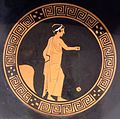
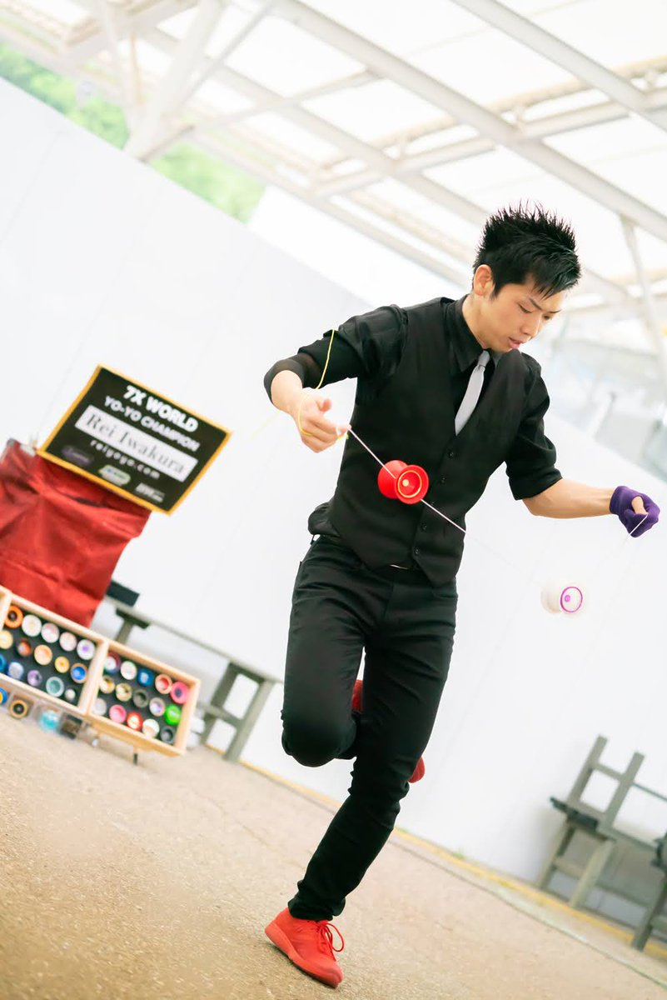

Humble Beginnings

The yo-yo is a skill toy that has been around for thousands of years, with documentation referencing the toy from various different places and cultures. There is no true inventor of the yo-yo, it was a popular concept that has seen many shapes and sizes throughout history. However, the modern yo-yo design that is known and loved today is credited by a man named Pedro Flores in 1928. Before Flores' design in 1928, a yo-yo string was tied to its axle, meaning the yo-yo would automatically return to the hand. Flores created a style of string that could be looped around the axel, allowing the yo-yo to spin continuously at the bottom of the throw. This popular trick, called the “sleeper,” would be the innovation yo-yoing needed to take it from a kid's toy into the pop culture phenomenon it is known as today. In 1929, Donald F. Duncan (yes, that Duncan) bought the company from Pedro Flores and created the Duncan Toy Company, which ultimately made yo-yos what they were today through competitions and other promotional events.
The Modern Yo-Yo Landscape
There have been ups and downs in the popularity of the yo-yo over the past 100 years (get it?). However, it is safe to say that due to social media, yo-yos are more popular than ever. There are over 100 different yoyo companies across the world, and there are dozens of major contests, including the World Yoyo Contest, each year. There are even governing bodies determining what yoyo tricks are and which tricks are the most difficult, with the United States of America National Yoyo League and the Japan Yo-Yo Federation being the most widely recognized in the community.
Yo-yos have also evolved. The most significant breakthrough that has happened in the last twenty years has been the rise of “unresponsive” yo-yoing. The single greatest limitation a yo-yo used to have was its “sleep time,” or how long it would spin at the end of the string after a throw. These yo-yos, or yo-yo's that return with a tug are called “responsive” yo-yos. This determined how many tricks you could do and how long your combos could be. Over time, your yo-yo would lose spin and automatically return to your hand, which could ruin potential combos if not done correctly, or even worse, you could get a knot!
However, what if you could choose when the yo-yo returned to your hand? With the use of wider ball bearings, rubber response pads, and taking advantage of physics, this became possible. The trick is called a “bind,” and in terms of modern yo-yos is as influential as the “sleeper” trick that came before it. All modern yo-yos, unless otherwise specified, are unresponsive, and require a “bind” to return them back to your hand. The trick has no true creator, and naturally developed over time. Here's a podcast if you're interested in learning more about the trick!

Styles of Yo-Yoing
There are thousands of different models of yo-yos, and five main different types of yo-yo styles:
- 1A: One yo-yo and one string attached to the hand. The classic style everyone knows and loves! You'd be surprised how intense the tricks can get with just one yoyo attached to a string.
- 2A: Two responsive yo-yos, each having one string attached to each hand. The yo-yo's must be responsive so you can perform looping tricks. This is my favorite style of yo-yoing, because it is the quintessential classic yo-yoing that everyone knows!
- 3A: Two yo-yos, each having one string attached to each hand. This style of yo-yoing is known for complex string style strings, with advanced string formations.
- 4A (Offstring): One or more yo-yos and one string attached to a hand, but the string is not attached to the yo-yo. Similar to the diabolo or chinese yo-yo, offstring yo-yos are able to perform advanced movements by leaving the string and being caught by the string.
- 5A (Counterweight): One or more yo-yos and one string attached to each yo-yo, but not the hand. Instead of wrapping the string loop around your finger, you wrap the string around a counterweight, or a small object that has some weight. This allows you to wrap the string in formations without your hand and allows for cool aerial movements!
Keep in mind that there are also many substyles of yo-yoing as well, including hydra, double dragon, 9A, fixed-axle, and many more. Remember, it is a toy, so there is no wrong way to play with a yo-yo!
What's Next?
Yo-yoing is a pop culture phenomenon that is here to stay for the foreseeable future. With so many new tricks, new yo-yos being created, and new competitions, there really is something for everyone in this hobby. As a community member for about two years now, I can also confidently say that the community is very welcoming, friendly, and will help anyone who needs it. If you're interested in learning how to yo-yo, check out the resources link on the sidebar, and if you have any questions about yo-yoing, you can always contact me using the link on the sidebar!
Here are some other resources you can read if you're interested in yo-yoing. Happy reading!
- Yo-Yo Article on Wikipedia
- National Yo-Yo League Website
- Japan Yo-Yo Federation Website
- World Yo-Yo Contest Article on Wikipedia
- Doctor Popular: Who Invented the Yo-Yo Bind?
-Will